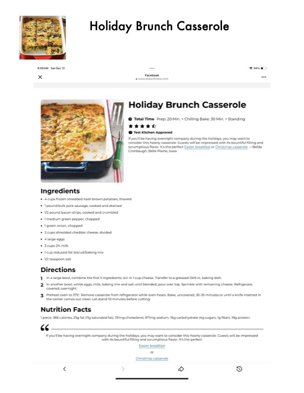

Holiday Brunch Casserole

Original cookbook page 723
Ingredients
- + 4 cups frozen shredded hash brown potatoes, thawed
- * lpound bulk pork sausage, cooked and drained
- * 1/2 pound bacon strips, cooked and crumbled
- + Imedium green pepper, chopped
- * Igreen onion, chopped
- * 2.cups shredded cheddar cheese, divided
- + 4 large eggs
- + 3. cups 2% milk
- + 1 cup reduced-fat biscuit/baking mix
- + 1/2 teaspoon salt
Instructions
- Inanother bowl, whisk eggs, milk, baking mix and salt until blended; pour over top. Sprinkle with remaining covered, overnight.
- Preheat oven to 375°. Remove casserole from refrigerator while oven heats. Bake, uncovered, 30-35 minutes o the center comes out clean. Let stand 10 minutes before cutting, Nutrition Facts 1 piece: 366 calories, 25g fat (Ilg saturated fat), 131mg cholesterol, 97Img sodium, 16g carbohydrate (4g sugars, 1g If you'll be having overnight company during the holidays, you may want to consider this hearty casserole. Gt with its bountiful filling and scrumptious flavor, It's the perfect Easter breakfast Christmas casserole
Recipe #723 from collection